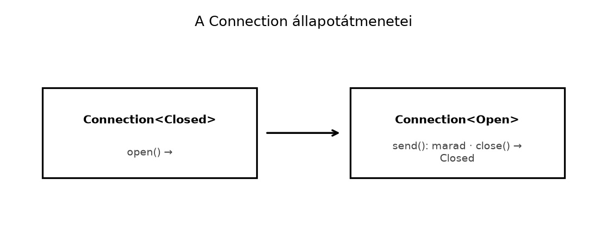

A C++ típusrendszere sok esetben túl megengedő. Ha egy függvény
métert és másodpercet vár, akkor is elfogad két double
értéket, ha véletlenül felcseréljük őket. Hasonlóképpen egy
std::string azonosító és egy felhasználónév ugyanaz a
típus, ezért a fordító nem jelez, ha a kettőt összekeverjük. A sablonok
és a std::array méretei fordítási időben ismertek, de a
típusok közötti kapcsolatokat – például azt, hogy egy mátrixszorzás csak
akkor lefordítható, ha a belső dimenziók egyeznek – nem mindig lehet
természetesen kifejezni. Végül a C++
std::true_type/std::false_type tag dispatch
technikája működik, de zajos és nem közvetlenül az állapotátmeneteket
modellezi.
A Rust válasza: a típusrendszer aktív tervezési eszköz. A
newtype minta új, egymással nem összekeverhető típusokat
hoz létre; a typestate minta az objektum állapotát a
típusparaméterbe kódolja; a PhantomData a birtoklási és
variancia-információkat teszi explicitté; a
const generikusok pedig a méreteket teszik a típus részévé.
Ezáltal a hibás állapotátmenetek, a mértékegység-keverések és a rossz
méretű mátrixok már fordítási időben kizárhatók.
Definíció. A newtype olyan tuple-struct, amely pontosan egy mezőt tartalmaz, és célja, hogy a belső típusból új, elkülönült típust hozzon létre anélkül, hogy futásidőben extra költséget jelentene.
Szabály. A newtype típus nem örökli a belső típus
trait-implementációit; a kívánt viselkedést derive-tal vagy
kézi delegálással kell biztosítani. A newtype megkerüli az orphan
rule-t, mert a saját típusunkra idegen traitet is implementálhatunk.
A mértékegység-biztonság érdekében a newtype a leghatékonyabb eszköz:
Meters(f64) és Seconds(f64) külön típusok, így
az m + s kifejezés fordítási hibát ad.
Definíció. A typestate olyan programtervezési minta, amelyben az objektum állapota a típus paramétere, és az állapotváltó műveletek új típusú értéket adnak vissza, miközben a régi értéket elfogyasztják.
Szabály. A Connection<S>
generikus típus S paramétere jelöli az állapotot
(Closed, Open). Az
impl Connection<Closed> blokkban definiált
open metódus Connection<Open>-t ad
vissza, az impl Connection<Open> blokkban definiált
close pedig Connection<Closed>-t. A
send csak a Connection<Open> impl
blokkban létezik, így a Connection<Closed>-on való
hívása fordítási hibát ad (E0599, „method not found”).
Definíció. A PhantomData<T> zéró
méretű marker típus, amely azt jelzi a fordítónak, hogy a struktúra úgy
viselkedik, mintha T típusú értéket birtokolna – anélkül,
hogy valóban tárolná.
Szabály. Ha egy struct típusparamétert
vagy lifetime-ot deklarál, de az nem jelenik meg a mezőiben, akkor
PhantomData kell. A választott alak három dolgot dönt el
egyszerre: a varianciát (milyen altípusképzés megengedett), a
birtoklási szándékot (a drop check szempontjából a típus
birtokolja-e a T-t), és az auto trait-eket
(Send, Sync).
Variancia röviden. Az 'a: 'b jelentése:
az 'a legalább addig él, mint a 'b.
Kovariáns típusnál a hosszabb élettartamú érték használható
rövidebb helyett (&'long str →
&'short str); kontravariánsnál fordítva;
invariánsnál egyik irány sem megengedett.
| Típus | Variancia T felett |
Birtoklás (drop check szándék) | Send / Sync |
|---|---|---|---|
PhantomData<T> |
kovariáns | igen, birtokolja a T-t |
pontosan akkor, ha T az |
PhantomData<&'a T> |
kovariáns ('a és T) |
nem | Send/Sync, ha T: Sync |
PhantomData<&'a mut T> |
'a felett kovariáns, T felett
invariáns |
nem | Send, ha T: Send; Sync, ha
T: Sync |
PhantomData<*const T> |
kovariáns | nem | sem Send, sem Sync |
PhantomData<*mut T> |
invariáns | nem | sem Send, sem Sync |
PhantomData<fn() -> T> |
kovariáns | nem | mindig Send és Sync |
PhantomData<fn(T)> |
kontravariáns | nem | mindig Send és Sync |
PhantomData<fn(T) -> T> |
invariáns | nem | mindig Send és Sync |
PhantomData<Cell<T>> |
invariáns | igen (a Cell tartalmazza a T-t) |
Send, ha T: Send; nem
Sync |
Gyakori tévedés, hogy a PhantomData<fn(T)>
invariáns: a függvény paramétere kontravariáns pozíció, csak a
fn(T) -> T (paraméter és visszatérés együtt) invariáns.
Ha invariáns jelölő kell, amely nem korlátozza az auto trait-eket, a
PhantomData<fn(T) -> T> a szokásos választás.
A táblázat variancia- és Send/Sync-oszlopát
lefordítással ellenőriztük. A pozitív eset (a hosszabb élettartam
rövidebbként használható) kovariáns típusra fordul, az invariánsra, a
kontravariánsra és a fordított irányra nem:
Kódblokk — fájl: src/main.rs (önálló
cargo new projekt) · művelet: teljes csere · ellenőrzés:
cargo build (a fordítónak hibátlanul le kell fordulnia)
use std::marker::PhantomData;
struct Cov<T>(PhantomData<T>);
struct Contra<T>(PhantomData<fn(T)>);
// Pozitív: kovariáns típus hosszabb élettartama rövidebbként is használható.
fn shorten<'long: 'short, 'short>(x: Cov<&'long str>) -> Cov<&'short str> {
x
}
// Pozitív: kontravariáns típusnál az ellenkező irány megengedett.
fn lengthen<'long: 'short, 'short>(x: Contra<&'short str>) -> Contra<&'long str> {
x
}
fn main() {}Negatív esetek: ugyanez a shorten az
Inv<T>(PhantomData<fn(T) -> T>)-re, a
Contra-ra, a lengthen a Cov-ra,
valamint a *mut T mezőt tartalmazó struktúrákra is
error: lifetime may not live long enough hibával áll meg. A
birtoklás oszlopot a szándékot jelző PhantomData<T>
adja: a drop check hatása stabil Rustban csak a Drop-ot
implementáló típusokon látszik, a #[may_dangle] instabil,
ezért ezt a táblázatban nem tesztelhető állításként, hanem a Nomicon
szándéka szerint közöljük.
Definíció. A const generikus olyan
generikus paraméter, amely értéket (pl. usize méretet) vesz
fel, nem típust. A Rust a const kulcsszóval jelöli, például
struct Matrix<T, const R: usize, const C: usize>.
Szabály. A const generikusok a típus részévé teszik
a méretet, így a fordító ellenőrizni tudja a
méretkompatibilitást, de csak akkor, ha az műveletek aláírása ugyanazt a
const paramétert használja az összekapcsolódó helyeken (például a
szorzás belső dimenziója mindkét operandusban K). Például a
[[T; C]; R] mezőben R és C a
típusparaméterek, így minden (R, C) kombináció külön típust
alkot.
C++-ban a strong typedef általában egy wrapper osztályt jelent:
class Meters {
double v_;
public:
explicit Meters(double v) : v_(v) {}
double value() const { return v_; }
};
Meters operator+(Meters a, Meters b) {
return Meters(a.value() + b.value());
}Rustban ugyanez a newtype minta:
#[derive(Debug, Clone, Copy, PartialEq)]
struct Meters(f64);
impl std::ops::Add for Meters {
type Output = Self;
fn add(self, rhs: Self) -> Self {
Meters(self.0 + rhs.0)
}
}A két minta lényegében egyenértékű: a C++ explicit
konstruktor is megakadályozza az implicit konverziót, és a fordító által
generált másoló konstruktor a wrapper osztályt is másolhatóvá teszi. A
különbség inkább az, hogy a Rust-ban a derive explicit
módon, egy sorban kéri a Clone, Copy,
PartialEq képességeket, és a Meters alapból
nem kap aritmetikát, azt trait-implementációval (Add) adjuk
meg; a C++ operátort szabad függvényként is lehet írni.
A reprezentációról: egy egymezős tuple struct ábrázolása a
gyakorlatban megegyezik a mezőével, de a nyelv ezt csak
#[repr(transparent)] esetén garantálja
(méret, igazítás és ABI azonos a mezőével; ezért FFI-n át is átadható).
Ezért érdemes a newtype-ra kitenni:
#[repr(transparent)] struct Meters(f64);. Ellenőriztük:
size_of::<Meters>() == size_of::<f64>() és az
igazítás is egyezik.
C++-ban a tag dispatch funkciótúlterheléssel és tag típusokkal oldjuk meg:
template <typename T>
void process(T x, std::true_type) { /* integral */ }
template <typename T>
void process(T x, std::false_type) { /* not integral */ }
template <typename T>
void process(T x) {
process(x, std::is_integral<T>{});
}Rustban a typestate minta az állapotokat típusparaméterként kezeli, és a metódusok rendelkezésre állása az állapottól függ. Ez közvetlenebbül fejezi ki az állapotgépet, és a hibás állapotátmenet nem fordítható le.
std::arrayC++-ban a méretet sablonparaméterként adjuk meg:
template <typename T, std::size_t R, std::size_t C>
struct Matrix {
std::array<std::array<T, C>, R> data;
};Rustban a const generikus ugyanezt a célt szolgálja:
struct Matrix<T, const R: usize, const C: usize> {
data: [[T; C]; R],
}A Rust verzióban a Matrix<f64, 3, 4> és a
Matrix<f64, 4, 3> különböző típus, de ettől a szorzás
még nem lesz ellenőrzött: a méretkompatibilitást a mul
aláírása kényszeríti ki, ha a közös (belső) dimenzió
ugyanaz a const paraméter a két operandusban. A C++ sablonnal ugyanez
megírható; a különbség nem a lehetőségben, hanem abban van, hogy a
Rustban a where-/const-határok a hibát a definíciónál,
érthetőbb üzenettel jelzik.
Kódblokk — fájl: src/main.rs (önálló
cargo new projekt) · művelet: teljes csere · ellenőrzés:
cargo run kimenete
[[58.0, 64.0], [139.0, 154.0]]
use std::ops::Mul;
#[derive(Debug, Clone, Copy, PartialEq)]
struct Matrix<const R: usize, const C: usize> {
data: [[f64; C]; R],
}
// (R×K) · (K×C) = (R×C): a K a két operandusban ugyanaz a típusparaméter.
impl<const R: usize, const K: usize, const C: usize> Mul<Matrix<K, C>> for Matrix<R, K> {
type Output = Matrix<R, C>;
fn mul(self, rhs: Matrix<K, C>) -> Matrix<R, C> {
let mut data = [[0.0; C]; R];
for i in 0..R {
for j in 0..C {
for k in 0..K {
data[i][j] += self.data[i][k] * rhs.data[k][j];
}
}
}
Matrix { data }
}
}
fn main() {
let a = Matrix::<2, 3> { data: [[1.0, 2.0, 3.0], [4.0, 5.0, 6.0]] };
let b = Matrix::<3, 2> { data: [[7.0, 8.0], [9.0, 10.0], [11.0, 12.0]] };
let c: Matrix<2, 2> = a * b;
println!("{:?}", c.data);
}A rossz belső dimenziójú szorzás (a * a, ahol
a 2×3-as) nem fordul le:
error[E0308]: mismatched types … expected3, found2`(expected
struct Matrix<3, _>,found struct Matrix<2,
3>`). Ezt kipróbáltuk, a hiba a hívás helyén jelenik meg, nem
futásidőben.
Vegyünk egy hálózati kapcsolatot, amely lehet zárt
(Closed) vagy nyitott (Open). Zárt állapotban
az open hívható, de a send nem; nyitott
állapotban a send és a close hívható.
use std::marker::PhantomData;
struct Closed;
struct Open;
struct Connection<State> {
addr: String,
state: PhantomData<State>,
}
impl Connection<Closed> {
pub fn new(addr: impl Into<String>) -> Self {
Connection {
addr: addr.into(),
state: PhantomData,
}
}
pub fn open(self) -> Result<Connection<Open>, std::io::Error> {
// A valóságban itt TCP-kapcsolatot nyitnánk.
Ok(Connection {
addr: self.addr,
state: PhantomData,
})
}
}
impl Connection<Open> {
pub fn send(&self, data: &[u8]) -> Result<usize, std::io::Error> {
// Itt küldenénk a hálózaton keresztül.
Ok(data.len())
}
pub fn close(self) -> Connection<Closed> {
Connection {
addr: self.addr,
state: PhantomData,
}
}
}
fn main() -> Result<(), Box<dyn std::error::Error>> {
let conn = Connection::new("localhost:8080");
// conn.send(b"hello")?; // Ez a sor fordítási hibát ad!
let conn = conn.open()?;
let n = conn.send(b"hello")?;
println!("{n} bájt elküldve");
let _conn = conn.close();
Ok(())
}A hibás sor kommentezve van. Ha ténylegesen beírjuk, a fordító a következőhöz hasonló hibát ad (a pontos szöveg verziófüggő):
error[E0599]: no method named `send` found for struct `Connection<Closed>` in the current scope
--> src/main.rs:...
|
| conn.send(b"hello")?;
| ^^^^ method not found in `Connection<Closed>`A javítás: először open-nel nyissuk meg a kapcsolatot,
és csak utána hívjuk a send-et, ahogy a fenti kódban
tesszük.

Az ábra szöveges megfelelője: Closed
–open()→ Open; Open
–send()→ Open; Open
–close()→ Closed. A Connection
típus állapotátmeneteit mutatja. A send csak az
Open állapotban létezik, ezért a zárt állapotban való
hívása fordítási hibát ad. Ez a typestate minta lényege: az állapotgép
érvénytelen átmenetei a típusrendszer segítségével kizárhatók.
Új típus létrehozása Deref implementációval
a belső típusra. Bár a Deref kényelmes lehet, hogy
a newtype gyakorlatilag úgy viselkedjen, mint a belső típus, ez megtöri
az absztrakciót, és visszahozza az implicit konverzió problémáját.
Helyette explicit metódusokat vagy a From/Into
konverziókat használjunk, ha szükséges.
A PhantomData elfelejtése. Ha egy
struktúra típusparamétert deklarál, de nem használja azt egyetlen
mezőben sem, a fordító a „parameter T is never used” hibát
ad. A megoldás egy PhantomData<T> mező felvétele.
Hasonlóan, ha a lifetime paraméter nem jelenik meg, a
PhantomData<&'a ()> jelzi az
élettartam-kötést.
A const generikusok túlzott használata. Ha minden méretet const generikussá teszünk, a monomorfizáció miatt sok különböző típus jön létre, ami növeli a fordítási időt és a bináris méretét. Csak akkor használjunk const generikust, ha a méret valóban a típus részét kell képezze (pl. mátrixműveletek, fix méretű pufferek), és ne akkor, ha a méret csak futásidőben ismert.
A typestate és az enum
összekeverése. Bár az enum is modellezhet
állapotokat, a typestate minta előnye, hogy a hibás metódushívás már
fordítási időben kiderül, míg az enum esetén a
match futásidőben kezeli az állapotokat. A typestate
különösen akkor hasznos, ha az állapotokhoz eltérő metóduskészletek
tartoznak.
Az alábbi kód szándékosan tartalmaz egy hibát. Fordulna-e le? Ha nem, miért? Mi a pontos hibakód?
use std::marker::PhantomData;
struct Closed;
struct Open;
struct Connection<S> {
state: PhantomData<S>,
}
impl Connection<Closed> {
fn new() -> Self {
Connection { state: PhantomData }
}
fn open(self) -> Connection<Open> {
Connection { state: PhantomData }
}
}
impl Connection<Open> {
fn send(&self) {}
fn close(self) -> Connection<Closed> {
Connection { state: PhantomData }
}
}
fn main() {
let conn = Connection::<Closed>::new();
conn.send();
}Adott a következő C++ strong typedef osztály:
class UserId {
int value_;
public:
explicit UserId(int v) : value_(v) {}
int value() const { return value_; }
bool operator==(UserId rhs) const { return value_ == rhs.value_; }
};Írj Rust newtype-ot, amely UserId(u32) néven definiálja
a típust, Copy, Clone, Debug,
PartialEq, Eq, Hash és
Ord tulajdonságokkal, és adj hozzá egy
From<UserId> for u32 és
From<u32> for UserId konverziót! Mutasd meg, hogyan
lehet UserId értéket HashMap kulcsaként
használni.
Önálló typestate-gyakorlat. A Session
nem része a hálózati szerver (Az rkv hálózati
szerver: TCP, protokoll, kecses leállás) feldolgozási útjának: a
handle_client közvetlenül a SharedStore-t
hívja, így a záróprojekt szervere hitelesítés nélkül fogad parancsot. A
feladat a típusállapotok tervezését gyakoroltatja; a protokoll
átvezetése (hitelesítő parancs, a végrehajtás minden útja a
Session<Authenticated>-en át) külön, nem kötelező
bővítés.
Az rkv-server crate-ben hozz létre egy
session modult és benne egy
Session<State> típust, amely egy
tokio::net::TcpStream-et és egy állapotot tárol. Az
állapotok: Anonymous és
Authenticated { user: String }. Az Anonymous
állapotban a new és az authenticate metódusok,
az Authenticated állapotban a user, a
run_command és a logout metódusok érhetők el.
Az authenticate ellenőrizze a jelszót (konstans
felhasználónév/jelszó pár elég), sikerrel
Session<Authenticated>-et adjon; hibás jelszó esetén
a névtelen munkamenetet a hibával együtt adja vissza, hogy a kliens újra
próbálkozhasson. A run_command a megosztott
SharedStore-on hajtsa végre a parancsot. Gondoskodj arról,
hogy a logout után a user hívása fordítási
hiba legyen, és ezt compile_fail doctesttel igazold. Ez a
feladat előkészíti az API-tervezés Rustban
alfejezetben tárgyalt ergonomikus API-kat.
Adott egy nyers mutatót tároló struktúra, amelyből hiányzik a
PhantomData:
struct RawBuffer<T> {
ptr: *mut T,
len: usize,
}Ez a kód lefordul? Ha nem, miért? Ha igen, milyen problémák
merülhetnek fel a varianciával és a birtoklással kapcsolatban? Írd át a
struktúrát úgy, hogy a típus helyesen jelezze a birtoklást és a
varianciát! Milyen PhantomData típust választanál, ha a
RawBuffer a T-t birtokolja, és miért?
Nem fordul le. A Connection<Closed> típuson nincs
send metódus, mert az csak a
Connection<Open> impl blokkban van definiálva. A hiba
kódja E0599 (method not found). A megoldás az, hogy előbb
open-nel nyissuk meg a kapcsolatot, és csak utána hívjuk a
send-et, vagy távolítsuk el a hibás hívást.
use std::collections::HashMap;
#[derive(Debug, Clone, Copy, PartialEq, Eq, Hash, PartialOrd, Ord)]
struct UserId(u32);
impl From<UserId> for u32 {
fn from(id: UserId) -> Self {
id.0
}
}
impl From<u32> for UserId {
fn from(v: u32) -> Self {
UserId(v)
}
}
fn main() {
let mut map = HashMap::new();
let id = UserId::from(42);
map.insert(id, "Alice");
let raw: u32 = id.into();
println!("{raw}");
assert_eq!(map.get(&UserId(42)), Some(&"Alice"));
}A derive(Eq, Hash, Ord) lehetővé teszi a
HashMap kulcsként való használatot. A From
implementációk explicit konverziót biztosítanak a newtype és a belső
típus között.
A munkamenet a szerver tokio-s típusaira épül: a socket
tokio::net::TcpStream, a parancsot a megosztott
SharedStore hajtja végre. Mivel a hitelesítés itt csak
típusállapot-átmenet, a példa szinkron authenticate-et
használ; az olvasás és az írás a meglévő async szerverkódban marad.
Kódblokk — fájl: rkv-server/src/session.rs ·
művelet: új fájl · ellenőrzés: cargo test -p rkv-server (a
két compile_fail doctest is)
//! Kapcsolat-állapot típusként (typestate): névtelen és hitelesített munkamenet.
use std::fmt;
use std::io;
use std::net::SocketAddr;
use rkv_core::{Command, Response, SharedStore};
use tokio::net::TcpStream;
/// Állapotjelző: a kliens még nem azonosította magát.
pub struct Anonymous;
/// Állapotjelző: a kliens hitelesített, a felhasználónév az állapot része.
pub struct Authenticated {
user: String,
}
/// Egy klienskapcsolat; az `State` típusparaméter az állapotot kódolja.
pub struct Session<State> {
conn: TcpStream,
state: State,
}
// Oktatási célú, rögzített hitelesítő adatok: valódi rendszerben tárolt, sózott hash kell.
const USER: &str = "admin";
const PASSWORD: &str = "secret";
impl Session<Anonymous> {
pub fn new(conn: TcpStream) -> Self {
Session { conn, state: Anonymous }
}
/// Siker esetén `Session<Authenticated>`. Hiba esetén a névtelen munkamenet
/// visszajár a hibával együtt, így a kliens újra próbálkozhat.
pub fn authenticate(
self,
user: &str,
password: &str,
) -> Result<Session<Authenticated>, (Session<Anonymous>, AuthError)> {
if user == USER && password == PASSWORD {
Ok(Session {
conn: self.conn,
state: Authenticated { user: user.to_owned() },
})
} else {
Err((self, AuthError::InvalidCredentials))
}
}
}
impl Session<Authenticated> {
pub fn user(&self) -> &str {
&self.state.user
}
/// A parancsot a megosztott tárolón hajtja végre; csak hitelesített munkamenet hívhatja.
pub fn run_command(&self, store: &SharedStore, command: &Command) -> rkv_core::Result<Response> {
store.apply(command)
}
/// Elfogyasztja a hitelesített munkamenetet, és névtelent ad vissza.
pub fn logout(self) -> Session<Anonymous> {
Session { conn: self.conn, state: Anonymous }
}
}
impl<State> Session<State> {
pub fn peer_addr(&self) -> io::Result<SocketAddr> {
self.conn.peer_addr()
}
/// A mögöttes socket visszaadása (például a válasz megírásához).
pub fn into_stream(self) -> TcpStream {
self.conn
}
}
#[derive(Debug, PartialEq, Eq)]
#[non_exhaustive]
pub enum AuthError {
InvalidCredentials,
}
impl fmt::Display for AuthError {
fn fmt(&self, f: &mut fmt::Formatter<'_>) -> fmt::Result {
match self {
AuthError::InvalidCredentials => write!(f, "invalid credentials"),
}
}
}
impl std::error::Error for AuthError {}
/// ```compile_fail,E0599
/// use rkv_server::session::{Authenticated, Session};
///
/// fn demo(session: Session<Authenticated>) {
/// let anonymous = session.logout();
/// anonymous.user(); // a `Session<Anonymous>`-nek nincs `user` metódusa
/// }
/// ```
///
/// ```compile_fail,E0382
/// use rkv_server::session::{Authenticated, Session};
///
/// fn demo(session: Session<Authenticated>) {
/// let _anonymous = session.logout();
/// session.user(); // a `logout` elfogyasztotta a hitelesített munkamenetet
/// }
/// ```
#[cfg(doctest)]
struct _TypestateMisuse;A #[cfg(doctest)] jelölésű üres struktúra csak a
dokumentációs példák hordozója: a compile_fail doctestek
fordítási hibát várnak, és csak cargo test --doc alatt
fordulnak.
A modult a lib.rs elején kapcsoljuk be, hogy a doctestek
és az integrációs tesztek is elérjék:
Kódblokk — fájl: rkv-server/src/lib.rs ·
művelet: új sor a fájl elejére · ellenőrzés:
cargo build -p rkv-server
pub mod session;Az állapotátmenetek tesztje valódi loopback-kapcsolaton fut. A hibás jelszó a névtelen munkamenetet adja vissza, amellyel újra lehet próbálkozni:
Kódblokk — fájl: rkv-server/src/session.rs ·
művelet: új tesztmodul a fájl végére · ellenőrzés:
cargo test -p rkv-server --lib session
#[cfg(test)]
mod tests {
use super::*;
use tokio::net::TcpListener;
async fn connected() -> (TcpStream, TcpStream) {
let listener = TcpListener::bind("127.0.0.1:0").await.unwrap();
let addr = listener.local_addr().unwrap();
let (client, server) = tokio::join!(TcpStream::connect(addr), listener.accept());
(client.unwrap(), server.unwrap().0)
}
#[tokio::test]
async fn wrong_password_returns_the_anonymous_session() {
let (_client, server) = connected().await;
let session = Session::new(server);
let (session, err) = match session.authenticate("admin", "nope") {
Ok(_) => panic!("a hibás jelszót el kellett utasítani"),
Err(pair) => pair,
};
assert_eq!(err, AuthError::InvalidCredentials);
// Ugyanazzal a (névtelen) munkamenettel újra lehet próbálkozni.
let session = session.authenticate("admin", "secret").ok().unwrap();
assert_eq!(session.user(), "admin");
}
#[tokio::test]
async fn authenticated_session_runs_commands_and_logs_out() {
let (_client, server) = connected().await;
let store = SharedStore::new(rkv_core::MemStore::new());
let session = Session::new(server).authenticate("admin", "secret").ok().unwrap();
let set = Command::Set("k".into(), "v".into());
assert!(matches!(session.run_command(&store, &set), Ok(Response::Ok)));
assert_eq!(store.get("k").unwrap(), Some(b"v".to_vec()));
let anonymous = session.logout();
assert!(anonymous.peer_addr().is_ok());
}
}Ellenőrzési pont.
cargo test -p rkv-server zöld (a session két
tesztje és a két compile_fail doctest), a
cargo clippy -p rkv-server --all-targets -- -D warnings
figyelmeztetés nélkül lefut. A két doctestet külön lefordítva a várt
hibát kapjuk: E0599
(no method nameduserfound for structSession<Anonymous>), illetve `E0382` (`borrow of moved value: `session).
A típusrendszer tehát garantálja az állapotok sorrendjét:
user csak hitelesített állapotban hívható, a
logout pedig elfogyasztja a hitelesített munkamenetet.
Az eredeti RawBuffer<T> lefordul:
a T megjelenik a *mut T mező típusában, így
nincs „unused parameter” hiba. Hiányzik viszont a birtoklási szándék, és
a viselkedése a táblázatból levezethető: a *mut T
invariáns T felett (nem kovariáns, ahogy
gyakran hiszik), ezért a RawBuffer<&'long str>
nem használható RawBuffer<&'short str>-ként, és a
nyers mutató miatt a típus sem Send, sem Sync.
Ha a RawBuffer birtokolja a T-t, a megfelelő
szerkezet a Vec-é: NonNull<T>
(kovariáns, mint a *const T) és
PhantomData<T> (birtoklási szándék; a drop check és
az auto trait-ek T-hez kötése).
Kódblokk — fájl: src/lib.rs · művelet: a
RawBuffer cseréje · ellenőrzés:
cargo build
use std::marker::PhantomData;
use std::ptr::NonNull;
struct RawBuffer<T> {
ptr: NonNull<T>,
len: usize,
_owns: PhantomData<T>, // birtokolja a T-t; kovariáns T felett
}
// Pozitív: a hosszabb élettartam rövidebbként is használható.
fn shorten<'long: 'short, 'short>(b: RawBuffer<&'long str>) -> RawBuffer<&'short str> {
b
}A NonNull<T> a *mut T-vel ellentétben
kovariáns, ezért a shorten lefordul (ellenőrizve). A
*mut T mezővel írt változatnál ugyanez
lifetime may not live long enough hibát ad. A
NonNull miatt a típus továbbra sem
Send/Sync (a fordító
NonNull<u8> cannot be sent between threads safely
hibát ad); ha a szándék az, hogy a RawBuffer<T>
Send legyen, ha T: Send, azt
unsafe impl<T: Send> Send for RawBuffer<T> {}
mondja ki, és az unsafe kötelezettségét a szerző vállalja.
A PhantomData<Cell<T>> ezzel szemben
invariánssá tenné a típust és kizárná a Sync-et; akkor
érdemes, ha a belső mutabilitás miatt éppen ez a cél.
Ebben az alfejezetben a Rust típusrendszerének haladó eszközeit
tanulmányoztuk. A newtype minta tuple-struct egyetlen
mezővel új, típusbiztos típust hoz létre, amely megkerüli az orphan
rule-t, és nem örökli a belső típus traiteket. A typestate
minta az állapotot típusparaméterként kezeli: a
Connection<Closed> és
Connection<Open> típusokra külön impl blokkok
biztosítják a megfelelő metódusokat, így a hibás állapotátmenetek
fordítási hibát adnak (E0599). A PhantomData<T> zéró
méretű marker, amely a birtoklást, az élettartamot és a varianciát
jelzi, a választott alak dönti el a varianciát
(PhantomData<T> kovariáns,
PhantomData<fn(T)> kontravariáns,
PhantomData<fn(T) -> T> és
PhantomData<Cell<T>> invariáns) és az auto
trait-eket. A const generikusok, mint a
Matrix<T, const R: usize, const C: usize>, a
méreteket a típus részévé teszik, így a mátrixműveletek
méretkompatibilitása fordítási időben ellenőrizhető. Továbbvitt
eredmények: a typestate minta és a
Session<State> típus
(rkv-server/src/session.rs) előkészíti az API-tervezés Rustban alfejezet ergonomikus
API-irányelveit, valamint az no_std, embedded-hal és
Embassy beágyazott állapotgépeit.
Send/Sync-oszlopa lefordítással (pozitív és
negatív shorten/lengthen esetek); az
rkv-server session modulja
cargo test és clippy -D warnings alatt, a két
compile_fail doctest és a várt
E0599/E0382 hibák.PhantomData<T>
drop check hatása (a #[may_dangle] instabil); ezt a Nomicon
leírása szerint közöljük.